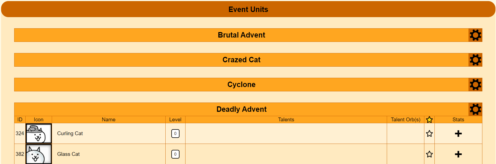
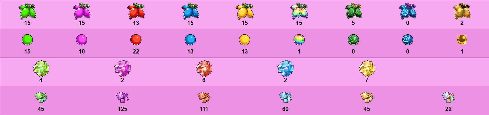
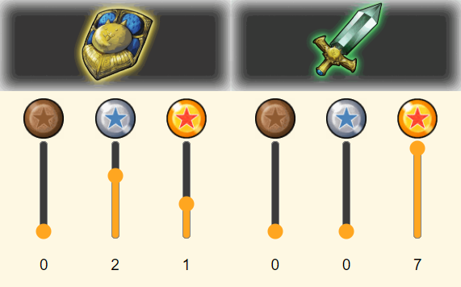
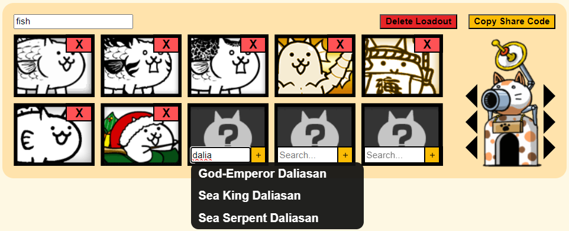
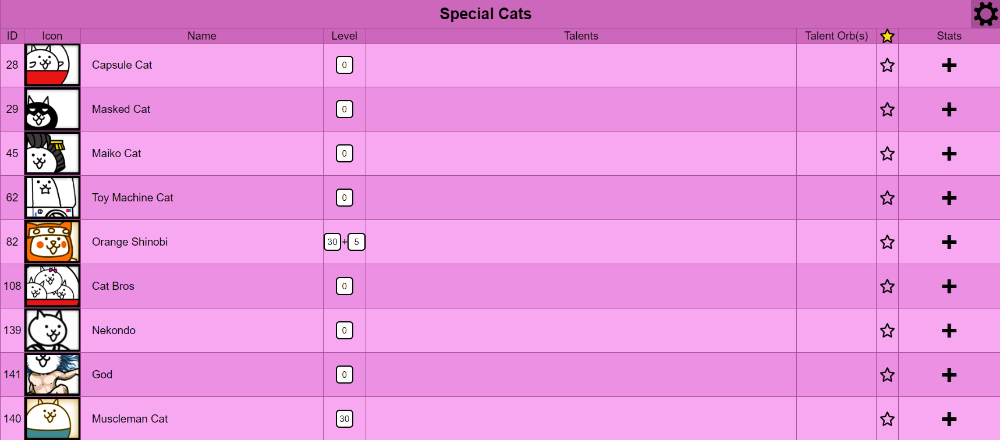

Welcome to The Battle Cats Collectopedia (BCC)!
Also known as BCUnitList
This is an unofficial, fan-run website for cat-aloging your collection of cats in the popular mobile game The Battle Cats.
Here on the home page, you can view explanations for any other page by selecting one of the options on the left, or go to another page by clicking one of the options on the top.
Most things on the website will have a hover tooltip providing a brief explanation of what they mean.
Don't know what The Battle Cats is? Check out the app on Android or iOS. If you haven't played the game this website isn't very useful...
And don't forget,
All Units
This tab displays a list of every unit in the game, sorted by rarity.
By clicking or scrolling, you can change every aspect of a unit to match how you've upgraded them:
With so many units, it can be hard to find a specific one. Use the quick nav at the bottom left to jump to a unit or rarity.
Even with quick nav, there are still a lot of units to go through. Each table has an options button for quickly filtering or modifying large numbers of units at once.
↓
↓
You can click the headers (the boxes that say "ID", "Icon", etc.) to sort the table in ascending order. Click the header again to switch to descending order. Check the Settings page for a brief explanation of how units are sorted for each header.
The options box for each unit contains buttons to quickly modify the unit's values. Hover on each button to see what it does, but an explanation is also shown below. Buttons are only shown when the unit could be modified by the option.
- R: Resets the unit, removing all upgrades and unfavoriting the unit.
- L: Sets the unit's level to max. This includes any levels that require catseyes.
- +: Sets the unit's plus level to max.
- T: Sets the unit's talents to max.
- UT: Sets the unit's ultra talents to max.
- M: Maxes all of the units upgrades. This includes all of the previously mentioned options, as well as the unit's form.
- H: Hides the unit. This prevents the unit from appearing in any unit tables, and lasts until showing all units using the table options menu.
Note that there is no button to set the unit's Talent Orbs to max, because many units have multiple equally useful talent orb options.
Single Unit
If you just want to update a single unit, there's no reason to wait for all of the units' data to load. This page lets you focus on a single unit in greater detail.
This page combines the upgrade costs tab and all units tab into one place, but for only one unit at a time.
Categories
Categories are a way of organizing cats into groups of related units, such as all units from the same gacha banner, or all Li'l cats.
This tab acts the same as the All Units tab, but instead of tables for each rarity, there are tables for each category.
There are a bunch of predefined categories, but if you wish, you can customize which ones are shown, or create your own categories, in the Settings tab.
Upgrade Costs
Ever wonder how much EXP you need to level up every unit to level 30. How about how much catfruit you need to farm?
In the Upgrade Costs tab, you can view the total amount of every resource in the game needed to fully upgrade every cat of a certain rarity or category.
There are a bunch of predefined categories, but if you wish, you can customize which ones are shown, or create your own categories, in the Settings tab.
There are two special categories, "All Units", which is self-explanatory, and "Abilities", which are the non-cat upgrades shown in the in-game upgrade menu after the normal cats.
Finally, for any category with an Uber Super Rare, there is an option to include resources needed for Ultra Form and Ultra Talent related upgrades. When this is turned off, any upgrade that relies on spending Dark Catseyes is not counted in the upgrade costs.
Cat Base
This page contains all of the upgrades that effect gameplay but aren't related to units.
The page contains your total user rank, useful for seeing if you forgot to set a unit's level. There are also several subtabs.
The first subtab is for treasures. There is a slider for each treasure in each chapter, as well as buttons to quickly max treasures, since you have them all maxed, right?
The second subtab is for the Cat Cannon & variants. You can level up each part of the different designs. Of course, the initial cannon only has one part, which also controls your base's health.
The third subtab is for having purchased The Cat God (completely different from the popular Cat God), and for your levels in each Ability. Abilities are the upgrades in the normal cat upgrade menu that aren't actually cats, e.g. the Study ability that increases EXP earned.
The final subtab is for the random other upgrades that don't fit cleanly into a specific subtab. Right now, the only upgrades in here are the Aku Altar level cap, and a toggle for if the Aku Altar has been fully disabled.
Loadouts
With the limited number of in-game loadouts, it can be difficult to save loadouts for specific levels, especially if they reset like Labrynth levels.
In the Loadouts tab, you can create loadouts like in game, equipping cannon parts and any unit you own in the website. Ownership is defined as the unit being at least level 1.
You can also generate a share code. This code can be entered into the "Freeform Loadouts" view, which lets you create loadouts with any unit in the game, even if you haven't marked them as owned on the website.
These share codes are a great way to ask for advice on a loadout or to give someone a loadout to help them with a stage they're struggling on.
The loadout in the previous image, for example, can be loaded using the following code!
eyJ0aXRsZSI6ImZpc2giLCJ1bml0cyI6WyJJNkYyTDIwKzkwIiwiSTY4NEYyTDUwKzcwIiwiSTk3RjJMNTAiLCJJMzZGMkw1MCs3MFQxMC0xMC0xMC0xMC0xMCIsIkk1MUYyTDUwKzgwVDEwLTEwLTEtMTAtMTAiLCJJMzExRjJMNTArNjBUMS0xMC0xMC0xMC0xMCIsIkk3NEYyTDUwIl0sImZvcm1zIjpbMCwwLDAsMiwxLDAsMF0sImJhc2VMZXZlbHMiOls3LDEsMV19
In the "Freeform Loadouts" view, you can also modify the unit's upgrades, and your cannon levels, without modifying your units elsewhere on the site.
Settings
There are several types of settings, starting with global unit filters. These are especially useful filters that apply to the entire website. This website actually contains every unit in every version of the game, but since it is English focused, units exclusive to non-English versions of the game are hidden by default using one of these global filters.
Next is the global category selection. This is like the global unit filters, but for entire unit categories. This does not effect the individual unit views, only categories as in the Categories and Upgrade Costs tabs.
After that is the custom unit categories section. This allows you to create categories with any grouping of units you want.
These custom categories work like any other category. You can even hide them in the global category selection if you want!

Then, there are the settings that modify how you view the website. They are divided into three parts:
-
Organization settings are settings that effect how some things get displayed, making it easier to focus on what you care about the most.
-
Auto-Collapse Tables: You can click on the title of any table that displays units to hide the units. This option, has those tables start collapsed.
-
Auto-Collapse Category Sections: Categories are divided into sections (e.g. "Collabs" or "Seasonal Events"). Like with tables, you can click on these section titles to collapse them, hiding all of the categories inside. This option has those sections start collapsed.
-
Single Category Display: This option has the Categories and Upgrade Costs pages only show one category at a time, using the "Select Categories" panel at the bottom of the page to switch between categories.
-
-
Default Sort settings is a single setting that controls exactly what the name suggests. Any table with units in it will be initially sorted using the sort specified here.
- In-Game Order sorts units based on their order in the actual game, which is a weird mix of the unit's category, ID, and date added to the game.
- ID is sorted in numerical order.
- Names are sorted in alphabetical order based on the unit's form when loading the table.
- Forms are sorted lowest to highest based on the unit's form when loading the table.
- Levels are sorted numerically based first on regular level, then on plus level.
- Talents are sorted numerically based first on the number of maxed out talents, then on the number of non-maxed talents, then finally on the number of unleved talents.
- Talent Orbs are sorted numerically on the quality of the orbs on the unit, with a single orb of a higher rank beating out any number of orbs of a lower rank (so 1 S rank orb is higher numerically then 2 A rank orbs). Units without orb slots are put lowest numerically.
- Favorited puts favorited units before nonfavorited units.
-
Other settings are miscellaneous settings that do something unique.
-
Arrow Upgrade Controls: Adds increment and decrement arrows for anything on the website that you modify by scrolling the mouse wheel. Good for touch pads!
-
Show Empty Categories: By default, any category containing only units that are filtered out by global filters is removed. This setting stops that, so every category always exists.
-
Short Browsing History: By default, this website creates a new entry in your browsing history every time you switch tabs. This can quickly fill up your browsing history. This setting changes that, so changing tabs does not effect the page history.
-
Lastly, there are the save management settings. These are powerful settings, so be careful when using one.
Import Save allows you to load a save from a file or from the clipboard. You can create a save in the clipboard or in a file using the options from Export Save.
Lastly, there is an option to delete your save data. This deletes everything, including settings, and cannot be undone except by loading a previous save (Assuming you created one).
After importing or deleting a save, it is recommended that you refresh the page, or at least change tabs, before attempting to make any changes.
There is a small message at the bottom of the page when using any of the save management settings. If that box is red, it means the action you tried to do failed, so read it carefully!
Miscellaneous
This section covers features and information about the website not specific to a single tab.
In the top right, you'll see Update . This site is updated manually, so that number lets you know what version of the app the site is updated to. Any new units, upgrades/forms, or mechanics that are added in an update after the one displayed have not been added yet, so please be patient :)
If you encounter any errors with the site, unit values that are incorrect, or just have something that you think it's really important gets added, please let me know! On the GitHub, there is a few issue templates for different possible issues. Please use one of those, but before you do, double check that there isn't actually a mistake on the Wiki or from your end.
Credits/Copyright
For unit data, images, and data validation.
For providing more accurate XP level curves for old/weird collab units.
For unit data and generally being a helpful source of information.
For having a lot of information about the Japanese version of the game.
For several images that are a pain to find otherwise.
And of course PONOS Corporation for making the game!
Copyright Notice
All data and images from The Battle Cats, as well as the name, brand, and any other related content, belong to PONOS Corporation. I do not make any claim of ownership for anything originally produced by PONOS.
This site is non-profit, and exists under fair use as an educational/informational tool.